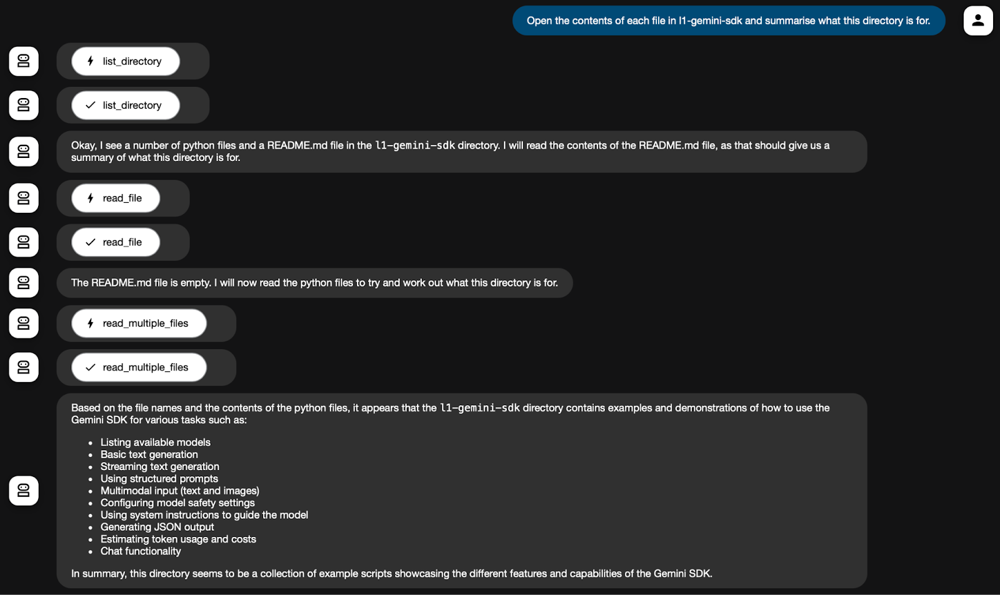
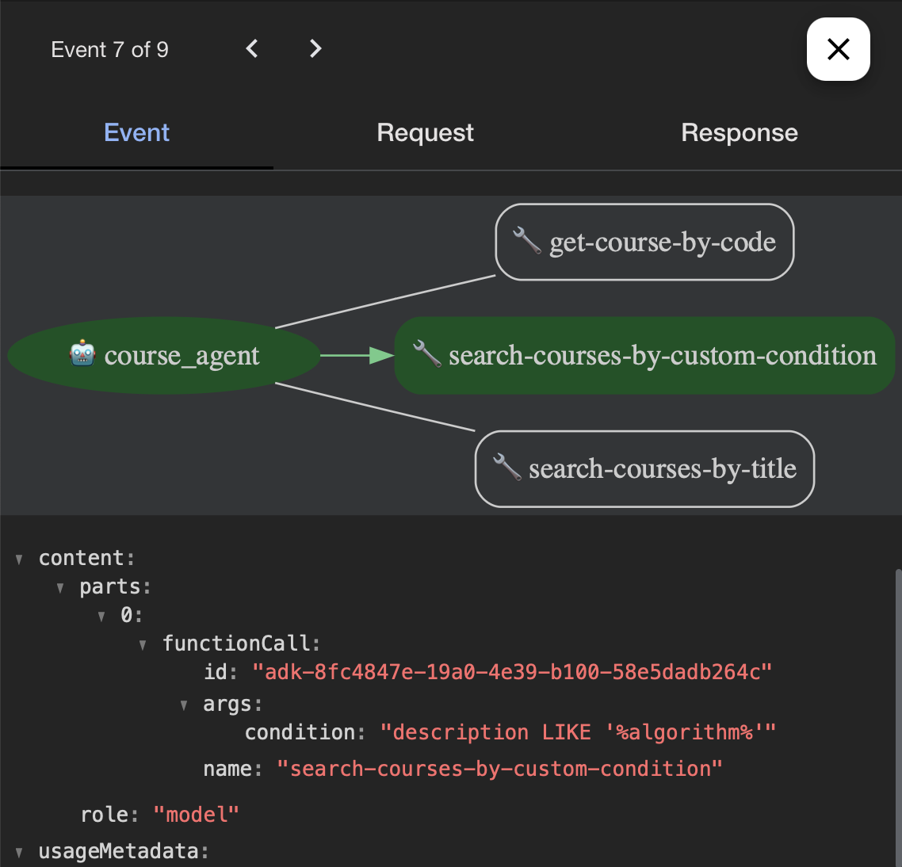

Last Updated: 2025-07-10
Refer to Lab 3 Getting Started for setting up an ADK project:
l4-adk-mcpuv add google-adk)In this lab, we will also install the MCP package:
$ uv add "mcp[cli]"
Some MCP clients/servers require Node.js. Check if you have Node.js installed and ready:
$ npx -v 10.9.2
There are two common errors:
npx command is not found then download and install Node.js from nodejs.org npx is restricted because running scripts is disabled ("Execution Policies" on Windows) then open Powershell as Administrator and run Set-ExecutionPolicy -Scope CurrentUser -ExecutionPolicy RemoteSignedCreate a file named agent.py in a new agent folder named filesystem-agent.
filesystem-agent/agent.py
from google.adk.agents.llm_agent import LlmAgent
from google.adk.tools.mcp_tool.mcp_toolset import MCPToolset
from google.adk.tools.mcp_tool.mcp_session_manager import StdioServerParameters
toolset = MCPToolset(
connection_params=StdioServerParameters(
command='npx',
args=["-y",
"@modelcontextprotocol/server-filesystem",
"C:\\Users\\CSIT\\agent-workshop",
],
)
)
root_agent = LlmAgent(
name='filesystem_assistant',
model='gemini-2.0-flash',
instruction='Help user interact with the local filesystem using available tools.',
tools=[toolset],
)In the args, replace C:\\Users\\CSIT\\agent-workshop with a path on your filesystem. If you are using Windows then use double backslash. For example, use the agent-workshop folder containing all your code from labs 1-3.
Don't forget that you will also need to add an init file:
filesystem-agent/__init__.py
from . import agentRun the ADK web interface:
$ uv run adk web ... INFO: Application startup complete. INFO: Uvicorn running on http://127.0.0.1:8000 (Press CTRL+C to quit)
Open your web browser at the given address, e.g. http://127.0.0.1:8000
Test your new agent. Example prompts:

Note how the agent can make many calls to different tools to satisfy the request.
The filesystem agent accessed data locally. MCP can also access remote data through APIs. In this section, we will call the Airbnb API to get information about places to stay. The MCP server provides 2 tools, one for searching and one for getting information about a specific Airbnb location. (Note: you cannot search availability or book - but maybe that will be available in the future!)
Create a file named agent.py in a new agent folder named bnb-agent.
bnb-agent/agent.py
from google.adk.agents.llm_agent import LlmAgent
from google.adk.tools.mcp_tool.mcp_toolset import MCPToolset
from google.adk.tools.mcp_tool.mcp_session_manager import StdioServerParameters
toolset = MCPToolset(
connection_params=StdioServerParameters(
command='npx',
args=["-y",
"@openbnb/mcp-server-airbnb",
"--ignore-robots-txt",
],
)
)
root_agent = LlmAgent(
name='bnb_agent',
model='gemini-2.0-flash',
instruction='Help user interact with the AirBNB website and listings.',
tools=[toolset],
)You will need to restart your ADK and refresh your browser.
Test your new agent. Example prompts:
Creating MCP servers is fashionable right now. Check out these lists of awesome MCP servers:
Find an MCP server that interests you and build an agent for it.
Much of the world's data is stored in public and private databases and there are many use cases where we'd like LLMs to be able to read and process that data. Unfortunately, most databases are too big to be able to pass all the data as a prompt for the LLM (and it would be too expensive).
The solution is to give LLMs access to a database via tools, and prompt the LLM describing the tools it can use to get data (and in some cases, insert or update data).
The MCP Toolbox for Databases allows you to create an MCP server for any supported database.
For this task we will create a university course database. To keep things simple, we will store the data in an SQLite file, but we can achieve the same outcome with any supported database management system (e.g. MySQL, Postgres, etc).
Download the Database files (l4-db.zip) and unzip the contents.
Move the courses.db to a new agent folder named course-agent.
The courses database contains one table, courses, with the columns:
course_code → 254361title → Artificial Intelligencedescription → This course addresses fundamental issues in artificial intelligence...credits → 3(2-2-5)degree_level → B.Sc.degree_programme → Computer Sciencedegree_year → 3degree_semester → 2To inspect the data, the zip file contains courses.csv which you can open in a spreadsheet or editor.
Go to the Toolbox Releases page and download the latest version for your platform.
Place the executable (e.g. toolbox.exe) in your course-agent folder.
Open a 2nd terminal window and verify that you can run the toolbox.
$ cd course-agent $ ./toolbox -v toolbox version 0.8.0+binary.windows.x86
If you see the version information then you are ready for the next step.
The toolbox requires a configuration file that defines the database connection and the tools:
course-agent/tools.yaml
sources:
course-db:
kind: "sqlite"
database: "courses.db"
tools:
search-courses-by-title:
kind: sqlite-sql
source: course-db
description: Search for a course by title
parameters:
- name: title
type: string
description: The course title to search for
statement: SELECT course_code, title, description, credits, degree_level, degree_programme, degree_year, degree_semester FROM courses WHERE title LIKE '%' || ? || '%'
get-course-by-code:
kind: sqlite-sql
source: course-db
description: Get a course by its code
parameters:
- name: course_code
type: string
description: The code of the course to retrieve
statement: SELECT course_code, title, description, credits, degree_level, degree_programme, degree_year, degree_semester FROM courses WHERE course_code = ?
toolsets:
basic-toolset:
- search-courses-by-title
- get-course-by-codeThe first section, sources, defines the database. If you change the path or name of your SQLite file then update the database key.
The second section, tools, defines the SQL statement for each tool. You can add a list parameters to be passed into the SQL statement. The descriptions are very important to tell the LLM how to use the tool.
In the 2nd terminal window, run the toolbox with the configuration file:
$ ./toolbox --tools-file tools.yaml 2025-07-10T01:34:47.211745+07:00 INFO "Initialized 1 sources." 2025-07-10T01:34:47.211832+07:00 INFO "Initialized 0 authServices." 2025-07-10T01:34:47.211845+07:00 INFO "Initialized 2 tools." 2025-07-10T01:34:47.211856+07:00 INFO "Initialized 2 toolsets." 2025-07-10T01:34:47.212127+07:00 INFO "Server ready to serve!"
Finally, we create a file named agent.py in a new agent folder named course-agent.
course-agent/agent.py
from google.adk.agents import Agent
from toolbox_core import ToolboxSyncClient
toolbox = ToolboxSyncClient("http://127.0.0.1:5000")
# Load all the tools
tools = toolbox.load_toolset('basic-toolset')
prompt = """
You are a helpful university student assistant.
You handle course searching using tools provided by the university's course management system.
Answer user questions about courses.
Do not answer questions about other topics.
"""
root_agent = Agent(
model='gemini-2.0-flash-001',
name='course_agent',
description='A helpful AI assistant.',
instruction=prompt,
tools=tools,
)The agent uses a new package toolbox-core, which you can add via uv:
$ uv add toolbox-core
Run the ADK in your 1st terminal (note you will need the toolbox running in one terminal and the ADK in another).
Test your new agent. Example prompts:
You can add more tools to tools.yaml for each SQL statement you would like your agent to have access to.
However, you can also harness the power of LLMs to write SQL for you. Add the following tool to tools.yaml. Also add it to the toolset.
search-courses-by-custom-condition:
kind: sqlite-sql
source: course-db
description: |
Search for courses based on a custom condition.
The condition should be a valid SQL WHERE clause without the "WHERE" keyword.
Example:
{{
"condition": "degree_programme = 'Computer Science' AND degree_year = 1",
}}
statement: SELECT course_code, title, description, credits, degree_level, degree_programme, degree_year, degree_semester FROM courses WHERE {{.condition}};
templateParameters:
- name: condition
type: string
description: The custom condition to filter courses
...
toolsets:
basic-toolset:
- search-courses-by-title
- search-courses-by-custom-condition
- get-course-by-codeRestart the toolbox and the ADK server.
Now you can prompt more advanced queries, and the LLM will generate the WHERE clause of the SQL. For example:
Use the ADK web interface to Inspect the events, can you find where the call to the tool was made? Can you identify the SQL used in the custom condition?

Congratulations, you've successfully built agents that use MCP to interact with the local filesystem, remote APIs and databases.